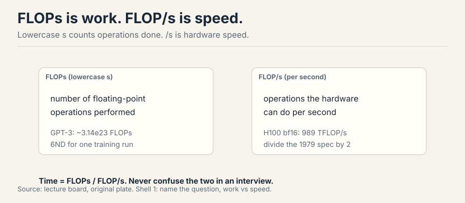
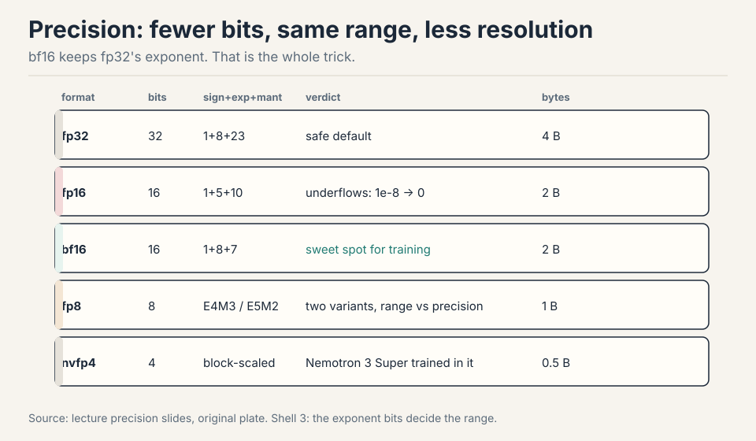
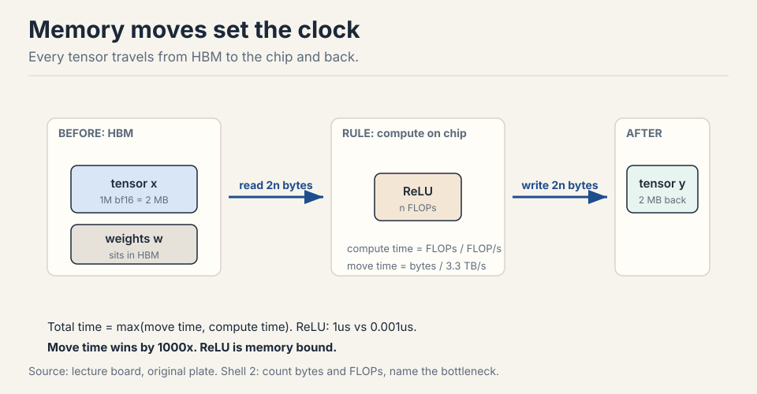
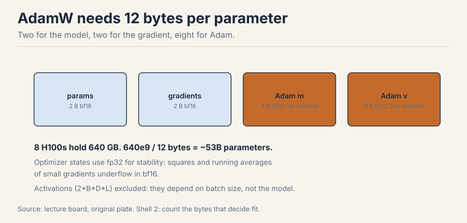
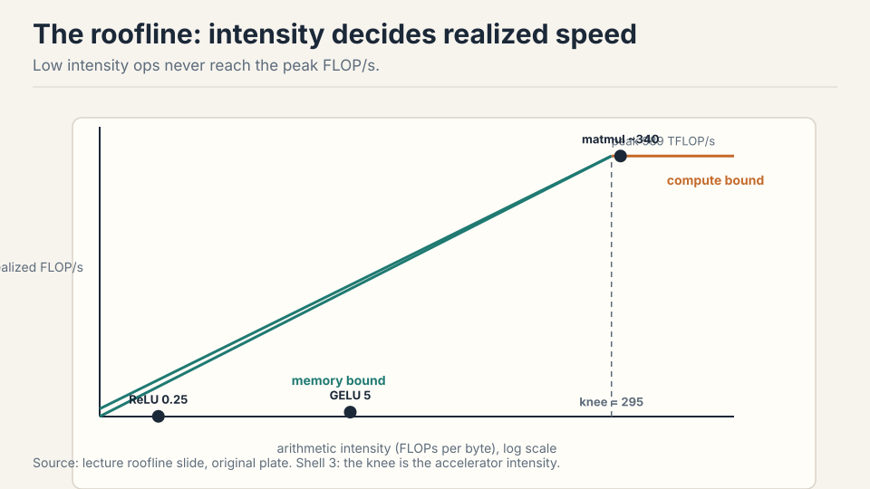
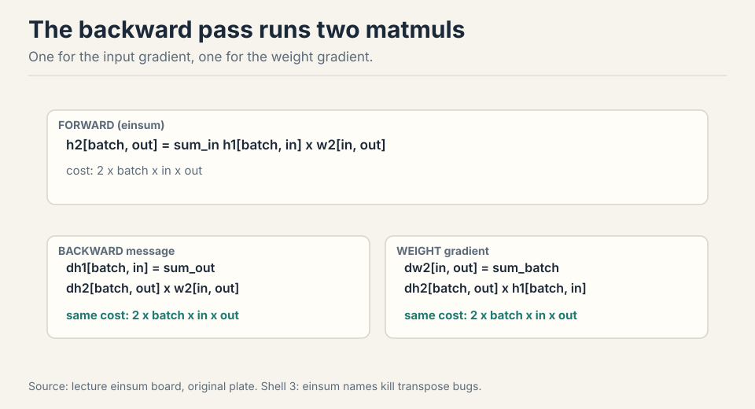
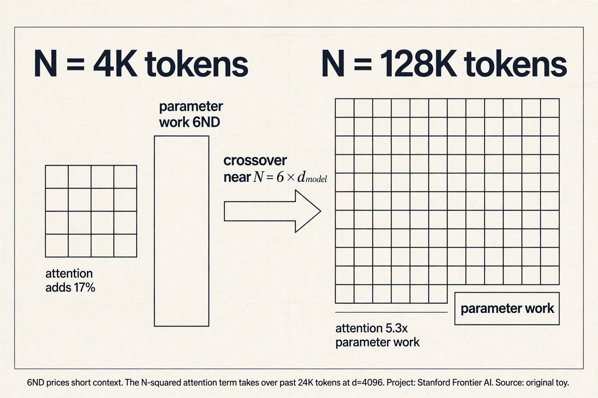
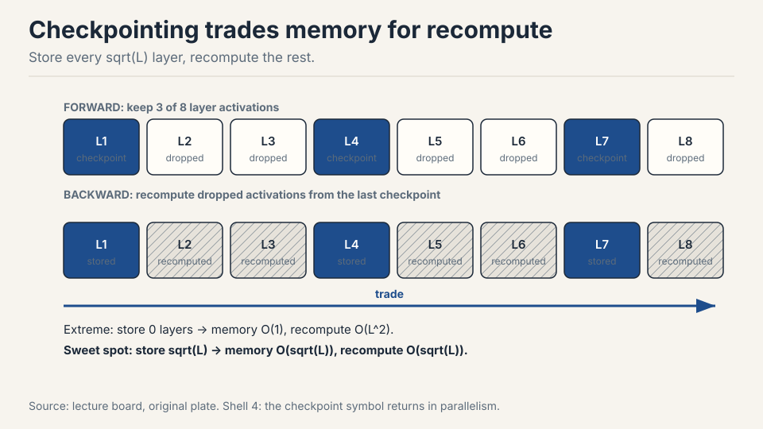
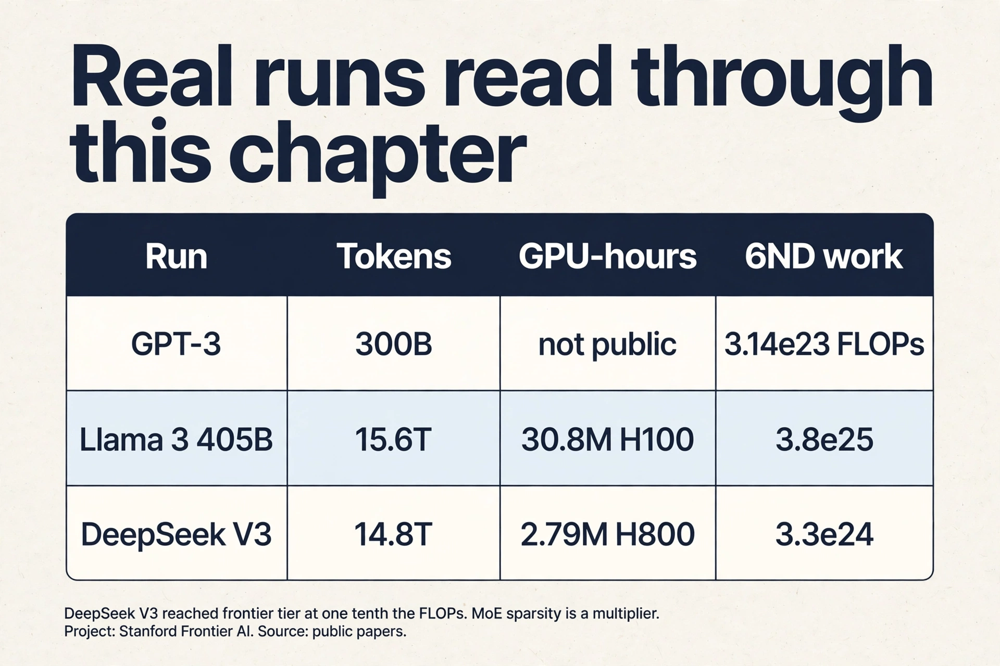

Lecture 2: Resource Accounting
Video blocked (ad-blocker or local file mode).
Watch on YouTubeVideo not loading? Watch on YouTube
Original lecture. Percy Liang derives the compute and memory accounting of training: precision, FLOPs, MFU, arithmetic intensity, and the 6ND rule.
Two questions open the lecture
The professor walked in with news. The Marin project had finished a 1e23 FLOP training run, and the final loss landed within 0.05 of what the scaling-law fits had predicted before the run started 00:09 ⏱00:09. The forecast matched the outcome. That is what good accounting buys: you price the run before you pay for it.
Then he posed two questions. Every tool in this chapter exists to answer them.
Question 1. How long to train a 70B parameter model on 15T tokens on 1024 H100s? Answer: 143 days 02:05 ⏱02:05.
Question 2. What is the largest model you can train on 8 H100s with AdamW? Answer: about 53B parameters 02:51 ⏱02:51.
The goal of the course is plain: train the best model possible given a finite set of resources. Resources mean compute and memory. Data is not the limit here. Before you can optimize efficiency, you must measure it. This chapter builds the measurement system.
First attempt: count the arithmetic
Start with the pieces. Everything in training is a tensor: a grid of numbers with any number of dimensions. Parameters are tensors. Gradients are tensors. Optimizer states are tensors. Data and activations are tensors 04:46 ⏱04:46.
Memory for one tensor is simple: number of elements times bytes per element. A 4x8 matrix in float32 holds 32 elements at 4 bytes each: 128 bytes 07:15 ⏱07:15. One matrix in GPT-3’s feedforward layer is about 2.3 GB 07:47 ⏱07:47. Tensors get big fast.
Now count the work. A FLOP is one floating-point operation: an addition, a multiplication, one unit of math 27:36 ⏱27:36. FLOP/s is hardware speed: how many of those the chip does per second.

The pet peeve: FLOPs with a lowercase s is work done. FLOP/s is speed. GPT-3 took about 3.14e23 FLOPs of work. The H100 promises 989 TFLOP/s of speed in dense bf16. Time equals work divided by speed 28:03 ⏱28:03.
The dominant op is the matrix multiply. A matmul of B x D by D x K costs 2 x B x D x K FLOPs 31:52 ⏱31:52. Each output entry needs D multiplications and D-1 additions. Round D-1 to D: 2 FLOPs per triple. Elementwise ops cost just the matrix size: addition on m x n costs mn FLOPs. No other op rivals matmul at large sizes, so accounting focuses on matmuls 32:34 ⏱32:34.
Reframe the matmul cost. B is the number of data points. D x K is the parameter count. The forward pass of one linear layer costs 2 x tokens x parameters. Hold that shape. It grows into the 6ND rule.
So the naive recipe for Question 1: total FLOPs = 6 x parameters x tokens (the 6 comes from forward plus backward, derived below). Look up the H100 speed on the spec sheet. Multiply by a utilization factor. Divide. Done.
Benchmarking honesty: GPUs run asynchronously. Wrap timing with
torch.cuda.synchronize() before and after, average several runs, or
your numbers are fiction 35:27 ⏱35:27.
Where the naive recipe breaks
The recipe works on paper and fails in four specific ways. Each one has numbers.
Break 1: the wrong precision corrupts everything
A float32 number has 32 bits: 1 sign bit, 8 exponent bits, 23 mantissa bits 06:08 ⏱06:08. The exponent sets dynamic range: how big and how small the numbers can be. The mantissa sets resolution: how finely they are spaced.
Cut the bits in half and you get float16: 1 sign, 5 exponent, 10 mantissa. The 5-bit exponent kills dynamic range. The value 1e-8 rounds to zero. Gradients in training routinely hit 1e-8. Train in fp16 and you get underflow, overflow, and NaNs 08:52 ⏱08:52. The arithmetic is fast but the answers are garbage.
bf16 was built in 2018 to fix this. Same 16 bits, different split: 1 sign, 8 exponent, 7 mantissa. The exponent keeps fp32’s 8 bits, so bf16 has fp32’s full dynamic range with worse resolution 09:53 ⏱09:53. Deep learning tolerates sloppy resolution: gradients are noisy anyway. It does not tolerate overflow. bf16 is the sweet spot.

Below bf16, the frontier keeps pushing. fp8 has two variants, one favoring range and one favoring resolution, supported by NVIDIA’s Transformer Engine 13:15 ⏱13:15. nvfp4 uses 4 bits per value with a per-block scale factor, so neighbors share dynamic range. Nemotron 3 Super trained in fp4 13:47 ⏱13:47. One-bit training has no credible result yet: the working recipe is train in bf16, then quantize to 1-2 bits after 16:21 ⏱16:21.
Mixed precision is standard practice. Use bf16 for parameters, activations, and gradients. Use fp32 for optimizer states: the optimizer squares gradients and keeps running averages across thousands of steps, and those tiny accumulated numbers underflow in bf16. PyTorch AMP wraps your code and casts automatically: matmuls go to bf16, exponentiation stays fp32 11:52 ⏱11:52.
bf16 keeps the 8-bit exponent of fp32, so it has the same dynamic range: no underflow of small gradients, no overflow of large activations. fp16 has only 5 exponent bits, so values like 1e-8 round to zero and training produces NaNs. Deep learning needs range more than resolution, because gradients are noisy anyway. That single bit-budget trade is why bf16 won. The optimizer squares gradients and keeps running averages across steps. Those are tiny numbers accumulated over thousands of updates. In bf16 the squares underflow and the averages lose the signal. The states are not the compute bottleneck, so paying 4 or 8 bytes per parameter there buys stability cheaply.
Break 2: the spec sheet lies, and you never reach it
The H100 lists 1979 TFLOP/s. The footnote says that number assumes sparsity. Dense math, the kind training actually does, runs at half: 989 TFLOP/s 29:29 ⏱29:29. Always read the footnote.
And you never get the full 989. Model FLOPs Utilization, MFU, is actual FLOP/s divided by spec-sheet FLOP/s 37:15 ⏱37:15. An MFU of 0.5 on a real model is good. A pure matmul can reach 0.8. An MFU of 0.1 means something is broken and you should fix it. You never exceed 1.0.
Intuition check: 8 H100s for one week give about 5e21 FLOPs 30:09 ⏱30:09. That is 8 x 989e12 x 604800 seconds. Napkin math like this is the whole game.
So Question 1’s recipe needs two corrections: halve the spec number, then multiply by MFU ~0.5. Now it reads: 6 x 70e9 x 15e12 = 6.3e24 FLOPs of work. Effective speed: 1024 GPUs x 989e12 x 0.5 = 5.1e17 FLOP/s, about 4.4e22 per day. Divide: 6.3e24 / 4.4e22 = 143 days.
Break 3: moving data costs more than computing
Here is the break that reshapes everything. Hardware is two boxes: HBM memory and the compute chip. Every op reads tensors from HBM, computes, and writes back 40:50 ⏱40:50. Total time is the slower of move time and compute time 44:46 ⏱44:46.
Worked example: ReLU on a 1M-element bf16 vector. Bytes moved: read 2 bytes per element, write 2 bytes per element, 4 MB total. FLOPs: 1M comparisons. Move time: 4e6 bytes / 3.3e12 bytes/s = about 1 microsecond. Compute time: 1e6 / 989e12 = about 1 nanosecond 42:38 ⏱42:38. The op spends its life waiting for bits. The compute is free by comparison.

Arithmetic intensity is FLOPs divided by bytes moved. The H100’s own intensity: 989e12 / 3.3e12 = about 295 46:00 ⏱46:00. An op with intensity below 295 is memory bound: the chip waits on data. Above 295, compute bound.
| Op | Bytes | FLOPs | Intensity | Bound by |
|---|---|---|---|---|
| ReLU | 4n | n | 0.25 | memory |
| GELU | 4n | 20n | 5 | memory |
| Dot product | 4n | 2n | 0.5 | memory |
| Matvec | 2n^2 | 2n^2 | ~0.5 | memory |
| Matmul | 6n^2 | 2n^3 | n/3 ~ 340 | compute |
GELU does 20x the work of ReLU per element, yet runs no slower: both are memory bound, so the extra FLOPs are free 48:23 ⏱48:23. Matmul is the only compute-bound op here, because it does n^3 work on n^2 bytes. Intensity grows with matrix size, which is why large batches and large matrices saturate GPUs 52:19 ⏱52:19.
The inference foreshadow: generating one token at a time is a matrix-vector product, hence memory bound. Training processes whole sequences at once, hence compute bound 53:29 ⏱53:29.
Break 4: the memory budget decides what fits
Question 2 is a memory question. Four residents live in GPU memory during training 69:27 ⏱69:27.

| Resident | Bytes | Notes |
|---|---|---|
| Parameters | 2 x P | bf16 |
| Gradients | 2 x P | bf16, one copy of params |
| Activations | 2 x B x D x L | bf16, scales with batch |
| Optimizer (Adam) | 8 x P | fp32: 4 for m, 4 for v |
AdaGrad keeps one fp32 state per parameter: 4 bytes. Adam keeps two: 8 bytes. Optimizer states are the capacity hog: they decide whether the model fits, even though they barely affect step speed 71:04 ⏱71:04.
The quiz answer falls out directly: 8 H100s = 640 GB. 640e9 / 12 bytes per parameter = about 53B parameters with AdamW.
Memory bottlenecks. Low MFU with high FLOP counts means the GPUs wait on data movement instead of computing. Check arithmetic intensity of your ops, batch sizes, and whether small elementwise ops dominate the profile. Compute the intensity, compare to 295, and find the memory-bound ops. Because MFU divides actual throughput by peak throughput. If every op is memory bound, the chip spends its time waiting for HBM and the achieved FLOP/s sits far below peak. The fix is not more FLOPs but higher intensity: bigger matmuls, larger batches, fewer elementwise passes.
The key question
The naive recipe counts arithmetic and assumes the chip delivers it. But the ReLU example shows the chip waiting a thousand times longer than it computes. What if the measurement system tracked data movement with the same care it tracks FLOPs? That question gives the roofline.
The roofline: one plot, one diagnosis
Plot intensity on the x-axis and realized FLOP/s on the y-axis. Each accelerator is a roofline: a rising ramp capped by its peak FLOP/s 54:48 ⏱54:48.

Ops left of the knee never reach the peak, no matter how well written. ReLU sits at 0.25, GELU at 5, both deep in memory-bound territory. Matmul at about 340 sits right of the knee and can saturate the chip. This plot is the diagnostic: compute your op’s intensity, find it on the x-axis, read your ceiling. If you sit left of 295, no amount of kernel tuning gets you to peak. You must change the op or its shape.
The 6ND rule, derived
Now derive the number that prices Question 1. Zoom into one linear layer. Forward: h2 = h1 @ w2. The backward pass computes two gradients 61:14 ⏱61:14.
forward: h2[batch, out] = sum_in h1[batch, in] * w2[in, out]
backward: dh1[batch, in] = sum_out dh2[batch, out] * w2[in, out]
dw2[in, out] = sum_batch dh2[batch, out] * h1[batch, in]
Each backward line is a matmul over the same three dimensions, so each costs the same as the forward. Two of them: the backward pass is exactly 2x the forward pass.

Total: 2ND forward + 4ND backward = 6ND FLOPs per training step, where N is parameters and D is tokens 65:52 ⏱65:52. This holds for transformers too, as long as context length stays modest: with very long contexts the n^2 attention term needs separate accounting 66:28 ⏱66:28.
One linear layer forward costs 2 FLOPs per parameter per token: one multiply and one add. The backward pass computes two gradients, each a matmul over the same dimensions, so it costs 2 x 2 = 4 FLOPs per parameter per token. Add forward and backward: 2 + 4 = 6. The rule counts multiply-adds across all parameters and all tokens in the batch. When attention dominates: its cost grows with sequence length squared, which 6ND ignores. For long-context training you add the attention term separately. It also ignores the optimizer step and elementwise ops, but those are small next to the matmuls.
Subchapter: when 6ND breaks (the attention term)
The 6ND rule counts parameters, not pairs. The attention score matrix costs extra: QK^T and the value mix each cost 2N^2 d per layer for N tokens of width d. Forward plus backward triples it: about 12Nd extra FLOPs per token per layer.
Compare with the parameter work: roughly 72d^2 FLOPs per token per layer (6 times about 12d^2 parameters per layer). The ratio is 12Nd / 72d^2 = N / (6d). Worked numbers for d = 4,096:
- N = 4,096: ratio = 4,096 / 24,576 = 0.17. Attention adds 17% on top of 6ND. The lecture’s caveat holds: 6ND is fine here.
- N = 32,768: ratio = 1.33. Attention costs more than all the parameters combined. 6ND now misses half the bill.
- N = 131,072: ratio = 5.3. Attention is 5 times the parameter work. 6ND misses most of the bill.
The crossover sits near N = 6 times d_model. For a d = 4,096 model that is about 24K tokens. Below it, 6ND prices the run. Above it, add the attention term. Long-context training budgets and all long-context inference budgets must carry the N^2 term.

Two memory tricks that change the budget
Activations scale with batch size: 2 x B x D x L bytes. Large batches stabilize training up to a critical batch size, but they may not fit in memory. Two tricks buy back the budget.
Gradient accumulation splits the batch into microbatches. Run one microbatch, add its gradients without zeroing, repeat, and step the optimizer every B/microbatch steps 72:30 ⏱72:30. Effective batch size B with the activation memory of one microbatch. Zero extra compute. A small code change for a large memory win.
Activation checkpointing attacks depth instead of batch. Training stores every layer’s activations for the backward pass. Checkpointing stores only a subset and recomputes the rest during backward 73:21 ⏱73:21.

The trade: memory down, compute up. Store nothing and recompute costs
O(L^2). The sweet spot stores every sqrt(L)-th layer: O(sqrt(L)) memory
and O(sqrt(L)) extra compute. In PyTorch, wrap a block with
torch.utils.checkpoint: the block runs forward without saving
intermediates, then recomputes them on the backward pass.
Gradient accumulation when the batch does not fit: it cuts activation memory by the accumulation factor with zero extra compute, but it does not change per-layer memory. Activation checkpointing when depth does not fit: it cuts activation memory to O(sqrt(L)) at the cost of about 30% extra compute from recomputation. Use both when both batch and depth are large. Neither reduces parameter or optimizer memory: that needs sharding or offloading, covered in the parallelism lectures. Store nothing and recompute everything and the backward pass costs O(L^2): each layer’s recompute replays the whole chain. Store every k-th layer and the cost is L/k memory plus k recompute per layer. Minimizing the sum gives k = sqrt(L): O(sqrt(L)) memory and O(sqrt(L)) extra compute. It is the balance point.
einops: names instead of indices
One tool for reading the code you will write. x.transpose(-2, -1)
forces you to track what -2 and -1 mean. einops names the dimensions
instead 18:12 ⏱18:12.
einsum is generalized matrix multiplication with bookkeeping. Name each dimension. Dimensions that appear on both inputs but not the output get summed out.
shapes: x is 3 x 4, y is 4 x 3 index soup: z[i,j] = sum_k x[i,k] * y[k,j] # what is k? named: x[seq1, hidden] * y[hidden, seq2] -> z[seq1, seq2]
The named version needs no transpose: the names do the work. With
batches, heads, and sequences stacked, ... absorbs the batch
dimensions you do not want to name 22:05 ⏱22:05. reduce
generalizes sum, mean, max, min over named dimensions
22:55 ⏱22:55. rearrange splits or merges dimensions, for example
splitting a width-8 dimension into 2 heads x 4 hidden before a per-head
operation 24:06 ⏱24:06.
Correctness and readability, not speed: it compiles to the same primitives. Named dimensions make the contraction pattern explicit, so transpose bugs and wrong-axis reductions become visible. In attention code with batch, head, and sequence dimensions, that clarity prevents the most common shape bugs. In the innermost hot loop where you need a fused kernel anyway, you write the kernel directly. einops is for model code, where clarity dominates and the ops lower to the same cuBLAS calls.
Mapping back: the tools answer the two questions
| Question | Tool | The correction it adds |
|---|---|---|
| 143 days to train 70B | 6ND | Prices the work: 2 forward + 4 backward per parameter per token. |
| 143 days | Dense spec 989 TFLOP/s | Halve the 1979 number: the footnote assumes sparsity. |
| 143 days | MFU ~0.5 | You never reach spec. Real models get half. |
| Why MFU is low | Intensity vs 295 | Left of the knee: memory bound. No kernel fix reaches peak. |
| 53B on 8 H100s | 12 bytes per param | 2 params + 2 grads + 8 Adam states. 640 GB / 12 = 53B. |
| Batch too big | Gradient accumulation | Microbatches, same effective batch, zero extra compute. |
| Depth too deep | Checkpointing | Store sqrt(L), recompute the rest, ~30% extra compute. |
Subchapter: what the real runs look like
The whole chapter is a reading lens for training announcements. Apply it to three public runs.
| Run | Tokens | GPU-hours (reported) | 6ND work estimate |
|---|---|---|---|
| GPT-3 (175B) | 300B | not public | 3.14e23 FLOPs (paper) |
| Llama 3 405B | 15.6T | 30.8M H100-hours (paper) | 6 x 405e9 x 15.6e12 = 3.8e25 |
| DeepSeek-V3 (671B MoE, 37B active) | 14.8T | 2.788M H800-hours (paper) | 6 x 37e9 x 14.8e12 = 3.3e24 |
Check DeepSeek-V3’s arithmetic. Capacity: 2.788M hours x 3,600 seconds x 989e12 FLOP/s (H800 dense bf16) = 9.9e24 FLOPs. Estimated work: 3.3e24. Ratio: about one third of peak, a realistic sustained number. The announcement survives the accounting.
The lesson of the table: DeepSeek-V3 reached frontier tier at roughly one tenth the FLOPs of Llama 3 405B (3.3e24 vs 3.8e25). MoE sparsity is a cost multiplier, not an architecture footnote. This is what the chapter’s tools are for: precision accounting, MFU discipline, and 6ND turn press releases into checkable numbers.

Profile one step and find the dominant op. Say the profile shows GELU taking 40% of step time. Compute its intensity: GELU moves 4n bytes and does 20n FLOPs, so intensity is 5. The H100 knee is 295. Intensity 5 sits far left: memory bound. The ceiling is bandwidth times intensity: 3.3e12 x 5 = 16.5 TFLOP/s, a tiny fraction of the 989 peak. No kernel rewrite fixes that. The op must be fused into a neighbor or deleted. Compare with the matmul at intensity about 340: its ceiling is the 989 peak, so if the matmul underperforms, tuning actually pays. The workflow: compute intensity, find the position on the roofline, read the ceiling, then decide whether to tune the op or change the math. Optimizing the arithmetic of a memory-bound op. Teams fuse and tile an elementwise op sitting at intensity 5, gain nothing, and miss the real fix: fewer passes over the data. Fuse it into the neighboring matmul or remove it.
Budget first. 64 GPUs x 30 days x 86,400 seconds x 989e12 FLOP/s x 0.5 MFU = 8.2e22 FLOPs. Now invert 6ND. Pick 20 tokens per parameter, the Chinchilla-ish optimum: N = sqrt(8.2e22 / 120) = sqrt(6.8e20) = 2.6e10. About 26B parameters on 520B tokens. Check memory: 12 bytes x 26e9 = 312 GB across 64 GPUs, about 5 GB per GPU. That fits easily with room for activations. The interview signal: quote the budget, state the MFU and token assumptions, invert the rule, then check memory. Anyone who skips the memory check is guessing. The Chinchilla optimum is roughly 20 tokens per parameter for compute-optimal training. Spending the budget there gives the best model for the FLOPs. Train longer on fewer parameters only when inference cost dominates, which is a serving decision, not a training one.
The honest price
Every number in this chapter is a back-of-the-envelope. The 143-day estimate ignores communication overhead and assumes a flat 0.5 MFU. Real runs vary. The 53B figure excludes activations, which depend on batch size and sequence length. 6ND ignores attention’s n^2 term: it underestimates long-context training. Mixed precision details (which ops stay fp32) are handled by AMP heuristics, not derived here.
The deeper price: this chapter prices training. Inference is a different economy. Training is compute bound (whole sequences at once). Inference is memory bound (one token at a time, a matrix-vector product). The intensity table already shows why: a matvec sits at intensity ~0.5, far left of the knee. The inference lecture spends a full chapter on that world.
Recap: the whole lesson on one screen
The story in eight steps. Each step answers the one before it.
- Two questions. 143 days to train 70B on 1024 H100s. 53B max on 8 H100s with AdamW. Every tool below exists to answer them.
- Count the arithmetic. Tensors: elements x bytes. Matmul: 2BDK FLOPs. FLOPs is work, FLOP/s is speed. Time = work / speed.
- Precision can corrupt. fp16 underflows: 5 exponent bits, 1e-8 rounds to zero, NaNs. bf16 keeps fp32’s 8-bit exponent: same range, 16 bits, the sweet spot.
- The spec lies. 1979 TFLOP/s assumes sparsity. Dense is 989. MFU: actual over promised. 0.5 is good, 0.1 is broken.
- Movement dominates. ReLU on 1M values: 1 microsecond moving, 1 nanosecond computing. Intensity = FLOPs / bytes. The H100 knee is
- GELU’s extra FLOPs are free.
- Backward is 2x forward. Two gradients per layer, each a matmul over the same dimensions. Total: 6ND. The price of every training run.
- Memory decides what fits. AdamW: 2 + 2 + 4 + 4 = 12 bytes per parameter. Optimizer states are the capacity hog.
- Two tricks buy budget. Gradient accumulation: microbatches, zero extra compute. Checkpointing: store sqrt(L), recompute the rest, ~30% extra compute.
Official sources and further reading
Official: - Lecture 2 video and executable code (lecture_02.py): all numbers above are computed live in the notebook. - einops tutorial: the named-dimension system used in the lecture.
Further reading: - Williams et al., Roofline (2009): the visual performance model behind the intensity analysis. - NVIDIA H100 spec sheet: the 1979 TFLOP/s figure and its sparsity footnote.
Caveats from these sources. The 143-day estimate ignores communication overhead and assumes a flat 0.5 MFU. Real runs vary. The 53B figure excludes activations, which depend on batch size and sequence length. 6ND ignores attention’s n^2 term: it underestimates long-context training. Mixed precision details (which ops stay fp32) are handled by AMP heuristics, not derived here.
Connections to the other courses
- CS229: the loss chip is defined there. Here it becomes the work unit that 6ND prices.
- CS336 later lectures: 6ND prices every scaling-law fit. The intensity table returns in the inference lecture. The 12-bytes budget gets sharded by the parallelism lectures.
- CS229S: the device block and memory hierarchy here become the multi-GPU topology there.
- CS329A: test-time compute is priced in FLOPs with the same accounting.
Sources
- VIDEOLecture 2 video, Stanford Online YouTube
- NOTESOfficial subtitle transcript (en-US)
- CODElecture_02.py, executable lecture code
- SUPPLEMENTeinops tutorial: named tensor operations
- PAPERWilliams et al., Roofline: An Insightful Visual Performance Model (2009)